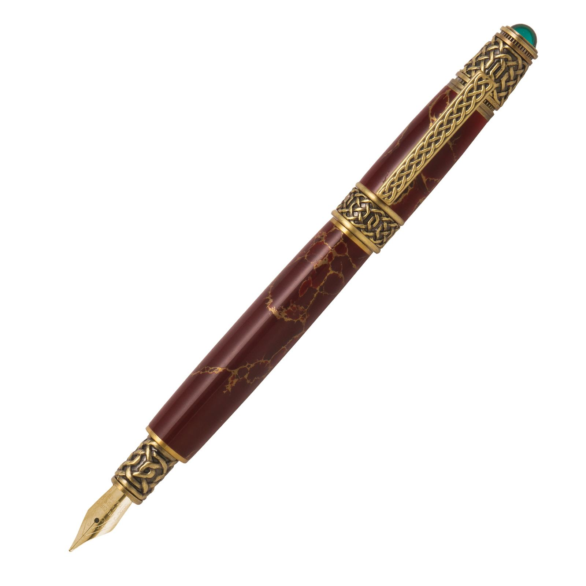
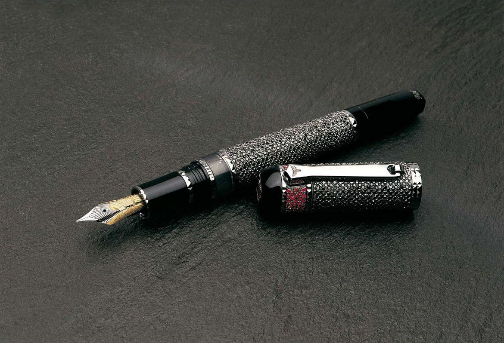

Curiosità sulle Penne
- Penna nello spazio: La "space pen", progettata per scrivere in condizioni di microgravità, è stata usata dagli astronauti durante le missioni spaziali. Funziona capovolgendola o anche sott'acqua!
- La penna più costosa: La penna stilografica "Fulgor Nocturnus" della casa di lusso Tibaldi è stata venduta all'asta per oltre 8 milioni di dollari. È realizzata in oro e decorata con diamanti neri e rubini.
- Penne ecologiche: Oggi molte aziende stanno producendo penne ecologiche utilizzando materiali riciclati o biodegradabili, contribuendo alla riduzione dell'impatto ambientale causato dalla plastica usa e getta.